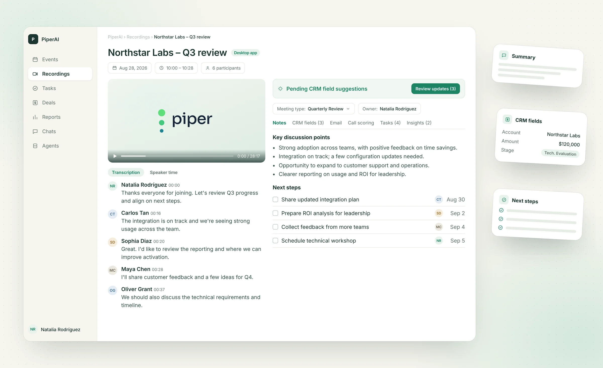
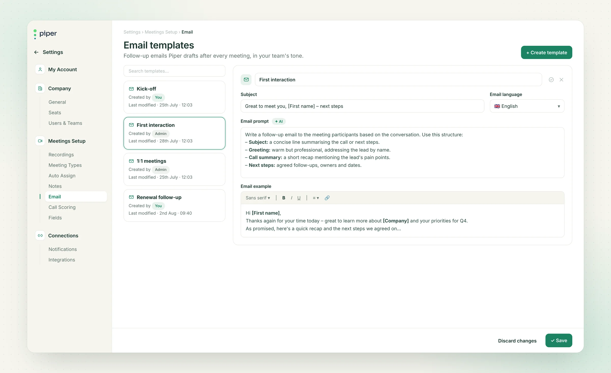
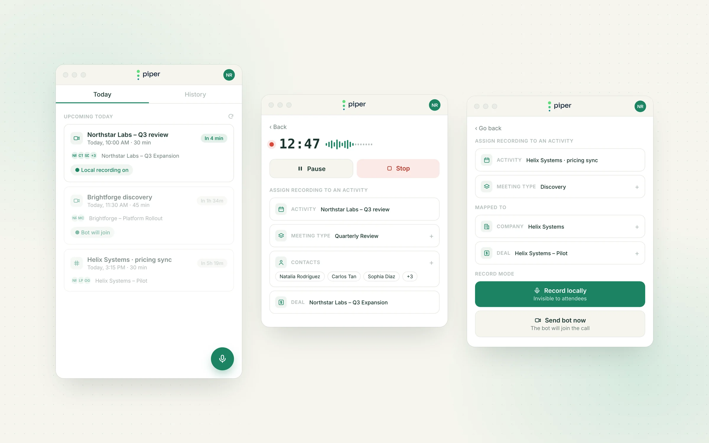
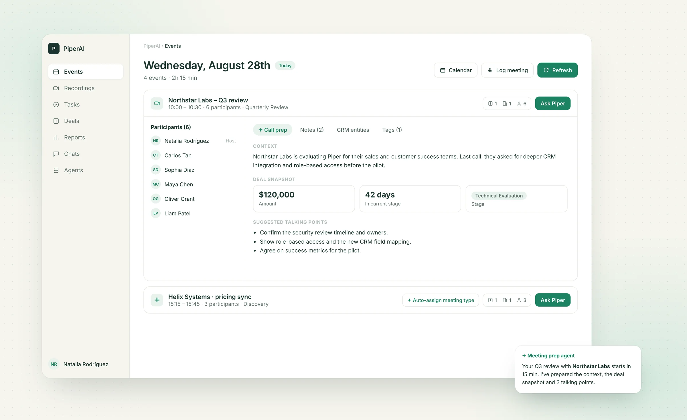
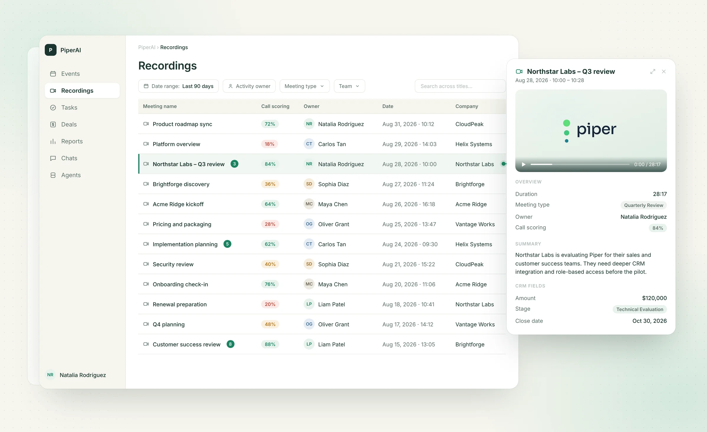
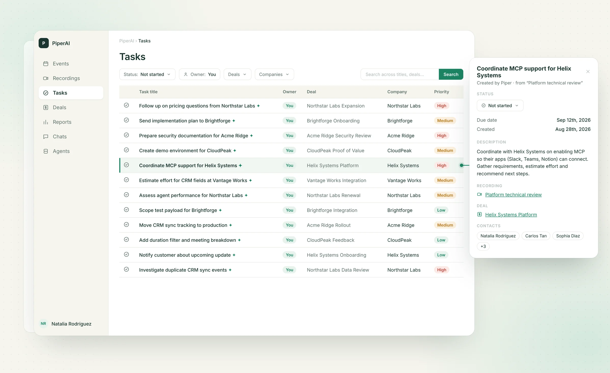
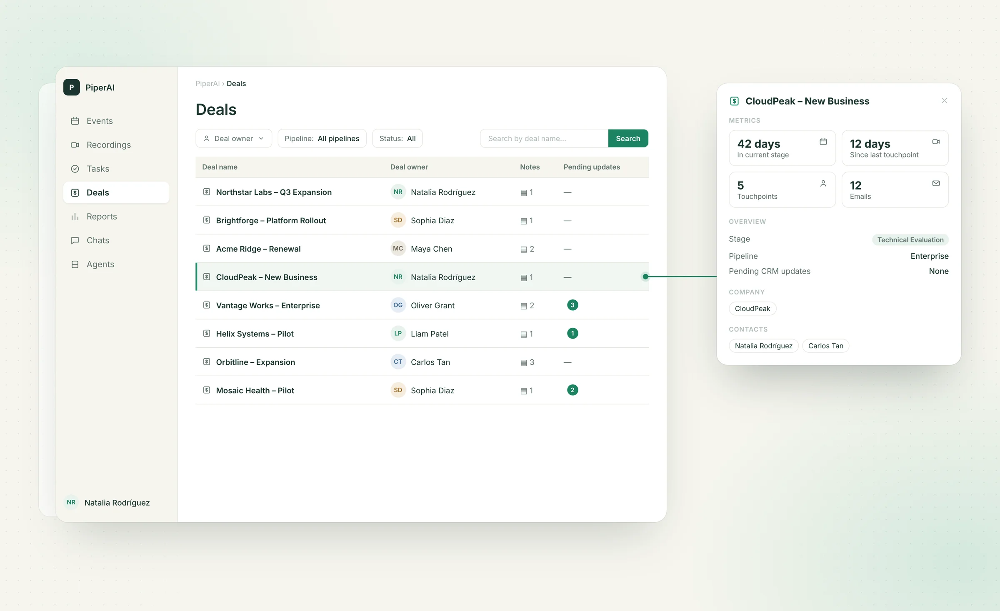
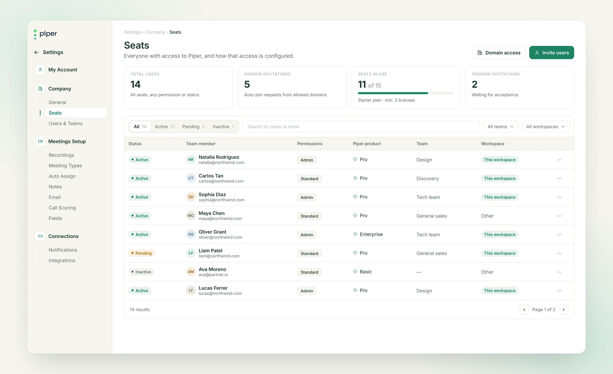
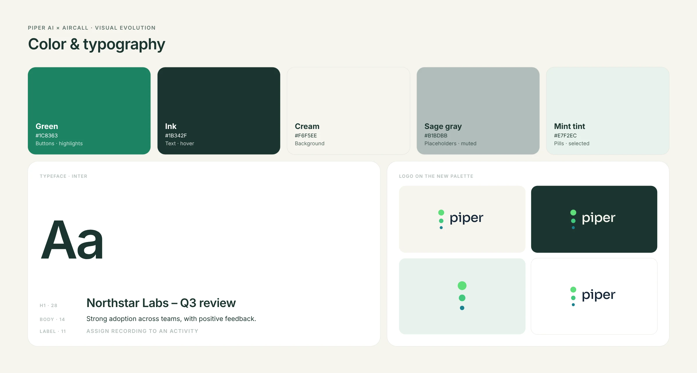
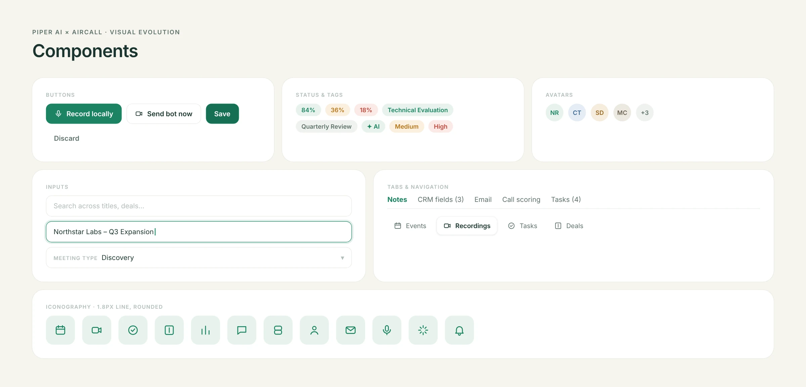

En construcción
Piper AI × Aircall
En 2023 diseñé desde cero el MVP de Piper: una herramienta que transcribía las llamadas de venta y rellenaba el CRM por los comerciales. Tres años después, Piper se ha convertido en una plataforma inteligente con agentes de IA totalmente personalizables, y en 2026 la adquirió Aircall. Este proyecto cuenta ese camino: cómo pasamos de un producto igual para todos a uno que cada equipo adapta a su forma de vender.
Contexto
El MVP de 2023 resolvía un problema muy concreto: los comerciales perdían horas pasando notas al CRM. Funcionó, pero al crecer descubrimos algo clave: cada equipo de ventas trabaja de una forma distinta. No se prepara igual una demo que una renovación, un SDR no necesita los mismos datos que un Account Executive, y cada empresa tiene su propio CRM, sus campos y su manera de hablar con los clientes.
Un producto cerrado nos obligaba a elegir por ellos. Así que tomamos una decisión de producto: que cada equipo pudiera configurar Piper a su medida. Y, con la IA, les ayudamos a automatizar todo el proceso y les hicimos el día a día más fácil. ¿Para qué vas a teclearlo todo en el CRM, si puedes pedirle a Piper que lo haga por ti con un solo audio?
Herramientas de diseño
El antes y el después
| 2023 · MVP | Hoy · Piper AI × Aircall | |
|---|---|---|
| Qué era | Asistente que transcribe y resume llamadas | Plataforma inteligente con agentes de IA totalmente personalizables |
| Cómo se graba | Un bot que entra en la videollamada | Envías el bot a la llamada, lo programas para que entre automáticamente o grabas desde la app de escritorio cuando detecta una conversación |
| Canales | Videollamadas | Llamadas, videollamadas, email, SMS, WhatsApp y actividad de campo |
| Datos | Campos fijos para todos | Cada equipo decide qué datos se extraen y dónde se muestran. Sincronización con el CRM en los dos sentidos: de Piper al CRM y del CRM a Piper |
| Seguimiento | Email de seguimiento al final | Agentes que actúan antes, durante y después de cada reunión |
| Experiencia | Igual para todos los usuarios | Personalizable desde Settings, con roles: el Admin controla partes de Settings que el usuario Standard no puede, y el usuario Read‑only consulta Piper sin licencia de pago |
La apuesta: personalización
Convertimos Settings en el centro del producto. Desde ahí, cada equipo adapta Piper sin depender de nosotros.
Meeting types
Cada equipo crea sus propios tipos de reunión (demo, discovery, renovación…). Cada tipo define qué se prepara antes, qué se analiza y qué pasa después.
Grabar sin incomodar
A muchos clientes les incomoda que se graben las llamadas, así que puedes ponerle al bot el nombre que quieras, por ejemplo «Notetaker». ¿Prefieres que no entre ningún bot? Usa la app de escritorio y graba la llamada con el SDK de tu ordenador, sin que aparezca nada en la reunión.
Los datos que importan a cada equipo
El equipo decide qué información se extrae de cada conversación (presupuesto, próximos pasos, objeciones, competidores…). Esa información aparece en la transcripción y se sincroniza con su CRM en los dos sentidos: Piper envía los datos al CRM y también trae del CRM lo que ya existe.

Agentes antes, durante y después de cada llamada
- Antes: meeting prep con el contexto del cliente y de la oportunidad.
- Durante: notificaciones cuando algo requiere atención.
- Después: emails de seguimiento y actualización del CRM.
Y, además, un agente al que preguntar cualquier cosa sobre tus deals, con respuestas basadas en todas tus conversaciones.

Piper, en tu escritorio
No todas las conversaciones pasan por una videollamada en la que puede entrar un bot. Muchas suceden en Slack, Teams o Google Meet, a veces sin planificar. Para que ninguna se quedara fuera, creamos la app de escritorio de Piper.
- Detecta la conversación: cuando empiezas a hablar en Slack, Teams, Google Meet u otra herramienta, aparece una notificación en tu ordenador.
- Graba con un clic: desde esa notificación, la app graba la pantalla de tu ordenador gracias a un SDK de grabación, sin que entre ningún bot en la llamada.
- Piper hace el resto: la grabación se envía a Piper, se transcribe y aparece en la home como una actividad más, con los datos extraídos, el CRM actualizado y los agentes en marcha.
El resultado: el comercial no tiene que acordarse de nada. Cualquier conversación de venta, venga de donde venga, acaba en Piper.

La plataforma hoy
Del calendario a la transcripción, las tareas y los deals: todo conectado y generado a partir de las conversaciones.





Evolución visual
Con la llegada a Aircall, Piper necesitaba una estética más madura y alineada con su nueva casa. La evolucioné hacia una paleta más sobria y cálida, con el verde como color de acción, fondos crema y tipografía Inter, y la convertí en un design system que da coherencia a la plataforma web, la app de escritorio y los agentes.


Cómo lo diseñamos
Diseñar algo tan configurable tenía un riesgo: que se volviera complicado. Trabajamos con tres principios:
- Funciona bien desde el primer día: valores por defecto útiles, sin obligar a configurar nada.
- Configurar se parece a usar: lo que el usuario ajusta en Settings lo ve reflejado en la transcripción y en sus reuniones.
- Iterar con clientes reales: cada funcionalidad se validó y se ajustó con el feedback de los equipos que usaban Piper a diario.
Resultado
- De un MVP a una plataforma inteligente con agentes de IA totalmente personalizables.
- Adquisición por Aircall en 2026, una empresa con más de 23.000 clientes en más de 100 países. El equipo de Piper se integra en Aircall.
Lo que aprendí
Diseñar para la personalización me enseñó que no se trata de añadir opciones, sino de entender por qué cada equipo trabaja como trabaja y darle el control justo para que el producto se adapte a él, y no al revés.